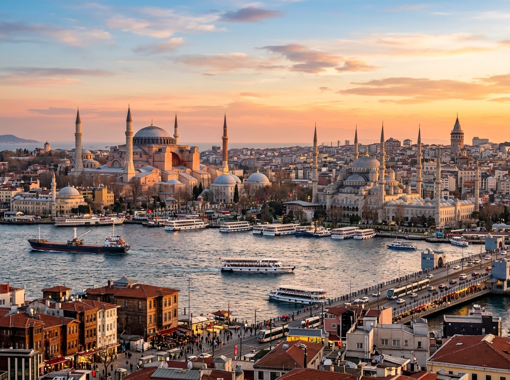
Hier stehen die wichtigsten Daten zu deinem Land. In der App baust du daraus deinen eigenen Steckbrief.
| Hauptstadt | Ankara (nicht Istanbul, das ist nur die größte Stadt) |
| Kontinent | Die Türkei liegt auf zwei Kontinenten. Ein kleiner Teil gehört zu Europa, der größere Teil zu Asien. |
| Sprache | Türkisch |
| Währung | Türkische Lira |
| Einwohner | etwa 85 Millionen Menschen |
| Fläche | etwa 785.000 km², ungefähr doppelt so groß wie Deutschland |
| Großes Gewässer | der Bosporus, eine schmale Meerenge mitten durch Istanbul. Er trennt Europa von Asien. |
| Nachbarländer | Griechenland, Bulgarien, Georgien, Armenien, Aserbaidschan, Iran, Irak und Syrien |
In der Türkei gibt es viele berühmte Orte. Diese vier solltest du kennen.
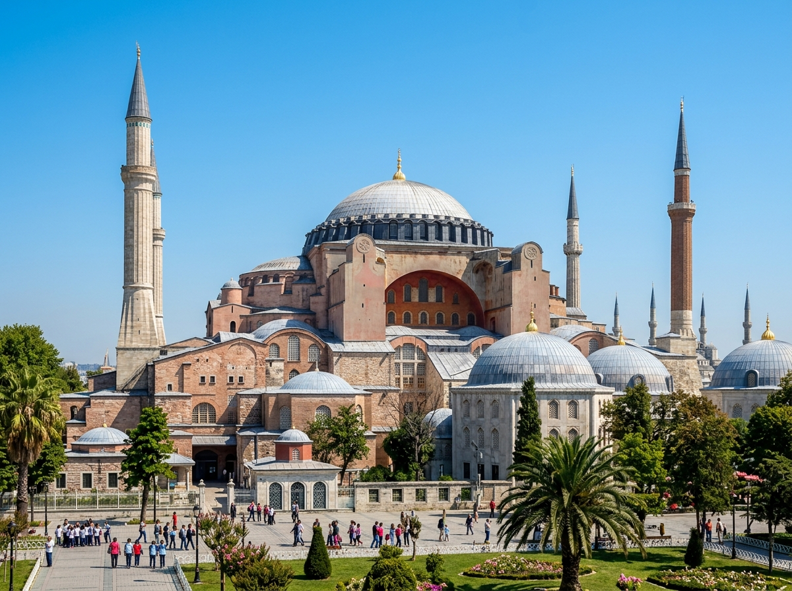
Hagia SophiaDie Hagia Sophia steht in Istanbul und ist ein riesiges, sehr altes Gebäude. Sie war früher eine Kirche, dann eine Moschee und auch einmal ein Museum. Über dem Gebäude wölbt sich eine gewaltige Kuppel. Sie ist schon fast 1.500 Jahre alt und ein Wahrzeichen der Stadt.
Grüne Wörter für die AppIstanbulsehr altgroße KuppelKirche und MoscheeWahrzeichen
KappadokienKappadokien ist eine Landschaft mitten in der Türkei mit seltsamen Felsen. Die Felsen sehen aus wie Pilze oder hohe Türme. In manchen Felsen gibt es Höhlen und sogar ganze unterirdische Städte. Jeden Morgen steigen dort bunte Heißluftballons in den Himmel.
Grüne Wörter für die Appseltsame Felsenwie PilzeHöhlenunterirdische StädteHeißluftballons
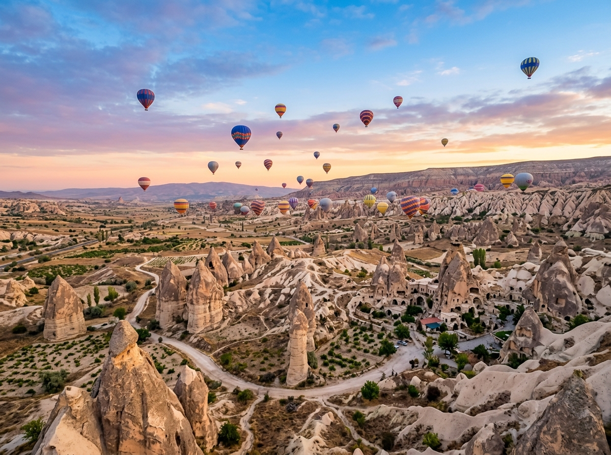
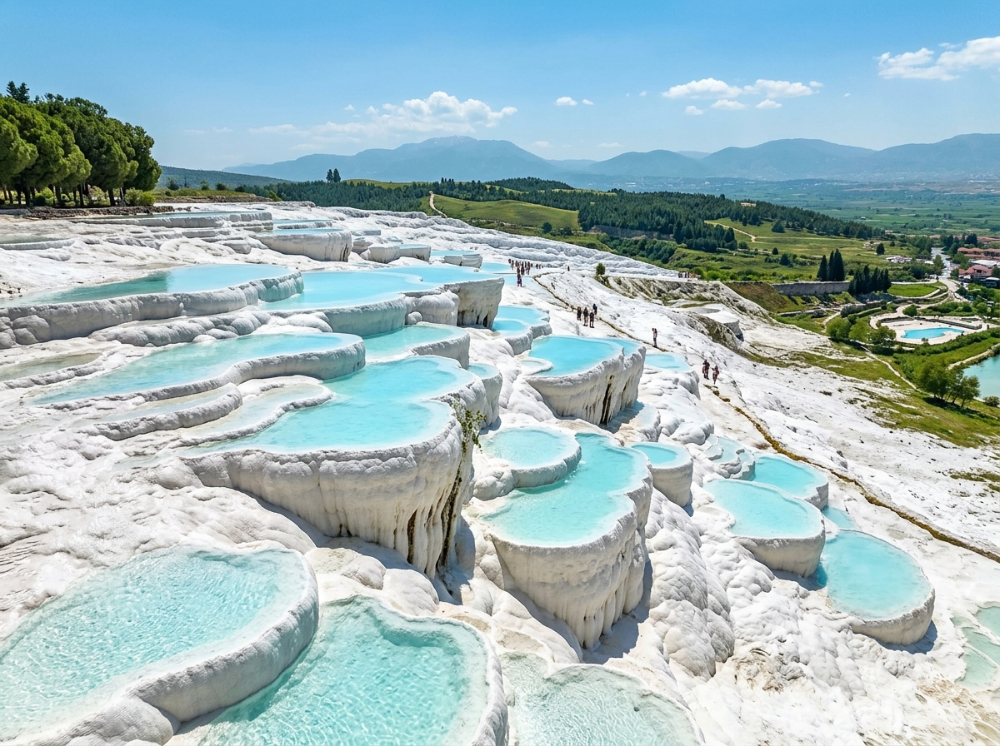
PamukkalePamukkale ist ein Ort mit weißen Terrassen aus Kalkstein. Über die Terrassen fließt warmes Wasser den Hang hinunter. Von weitem sieht alles aus wie Schnee oder weiche Baumwolle. Viele Menschen baden dort im warmen Wasser.
Grüne Wörter für die Appweiße TerrassenKalksteinwarmes Wasserwie Schneebaden
BosporusDer Bosporus ist eine schmale Meerenge mitten durch Istanbul. Auf der einen Seite liegt Europa, auf der anderen Seite liegt Asien. Viele Schiffe fahren hier durch. Große Brücken verbinden die beiden Seiten miteinander.
Grüne Wörter für die AppMeerengeIstanbulEuropa und AsienSchiffeBrücken
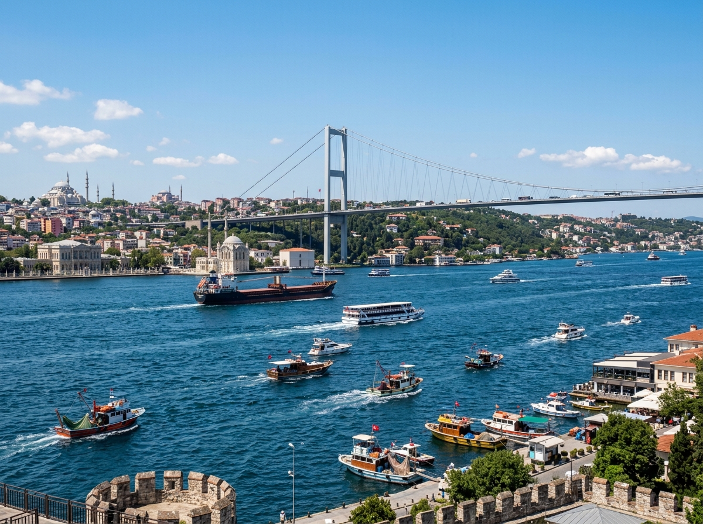
In der Türkei leben Tiere, die es bei uns so nicht gibt. Diese drei solltest du kennen.
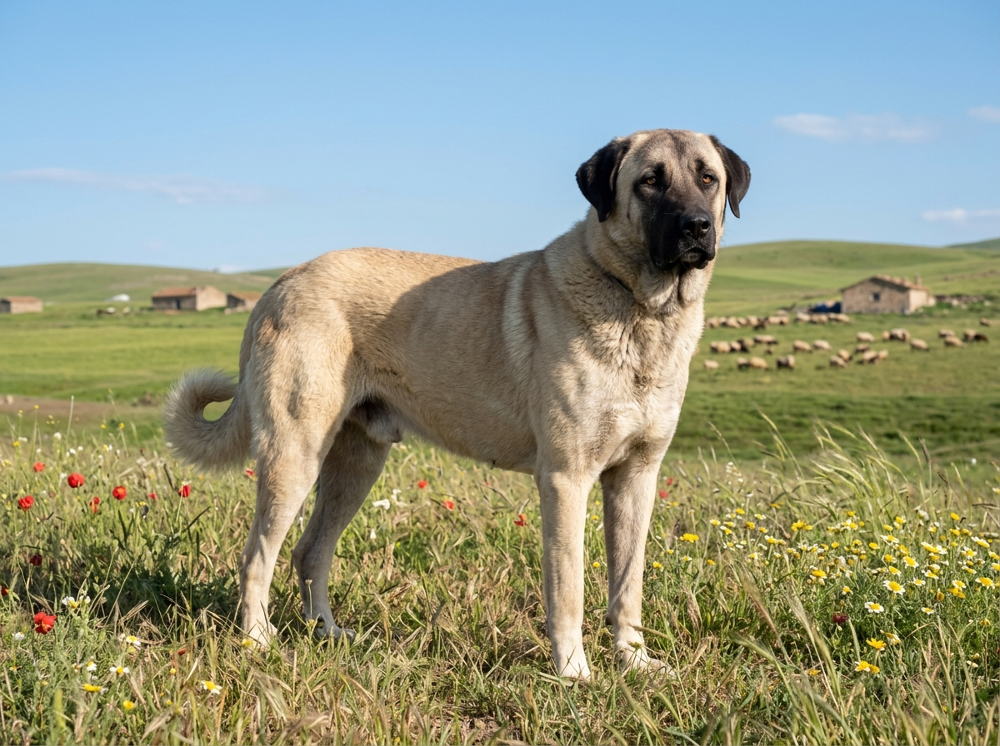
Kangal-HundDer Kangal ist ein sehr großer und kräftiger Hund aus der Türkei. Früher passte er auf die Schafe auf und beschützte sie vor Wölfen. Er ist mutig und stark. Trotzdem ist er ein treuer Begleiter für die Hirten.
Grüne Wörter für die Appgroßer Hundsehr kräftigbeschützt Schafevor Wölfenmutig
FlamingoIn der Türkei gibt es flache Salzseen, zum Beispiel den Tuz Gölü. Dort machen jedes Jahr Tausende Flamingos Rast. Flamingos sind rosa und stehen oft auf einem Bein im Wasser. Ihre große Zahl ist ein schönes Bild in der weiten Landschaft.
Grüne Wörter für die AppSalzseeTuz Gölürosaauf einem Beinviele Tausend
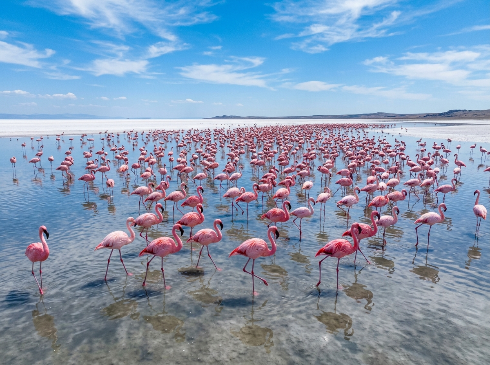
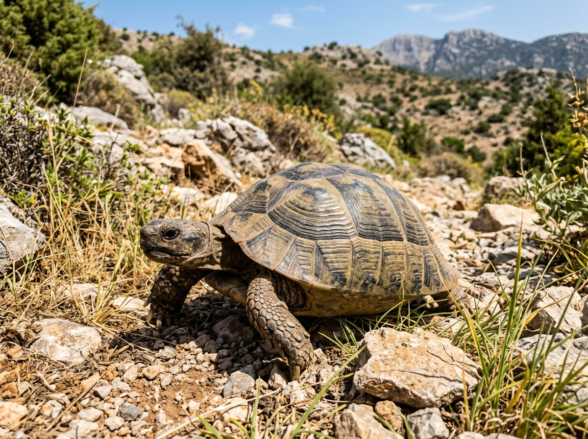
Anatolische SchildkröteDie Anatolische Schildkröte ist eine Landschildkröte. Sie lebt in den trockenen Hügeln der Türkei. Die Schildkröte ist langsam und sehr zäh. Sie kann viele Jahre alt werden.
Grüne Wörter für die AppLandschildkrötetrockene Hügellangsamzähwird sehr alt
In der App kannst du beim Essen das Foto nehmen oder dein Gericht selbst malen.
Döner KebabDöner Kebab ist in der Türkei erfunden worden. Das Fleisch dreht sich an einem senkrechten Spieß und wird dünn abgeschnitten. Dann kommt es mit Salat in ein Fladenbrot. Bei uns in Deutschland gibt es Döner an fast jeder Ecke.
Grüne Wörter für die AppDrehspießFleischFladenbrotSalataus der Türkei
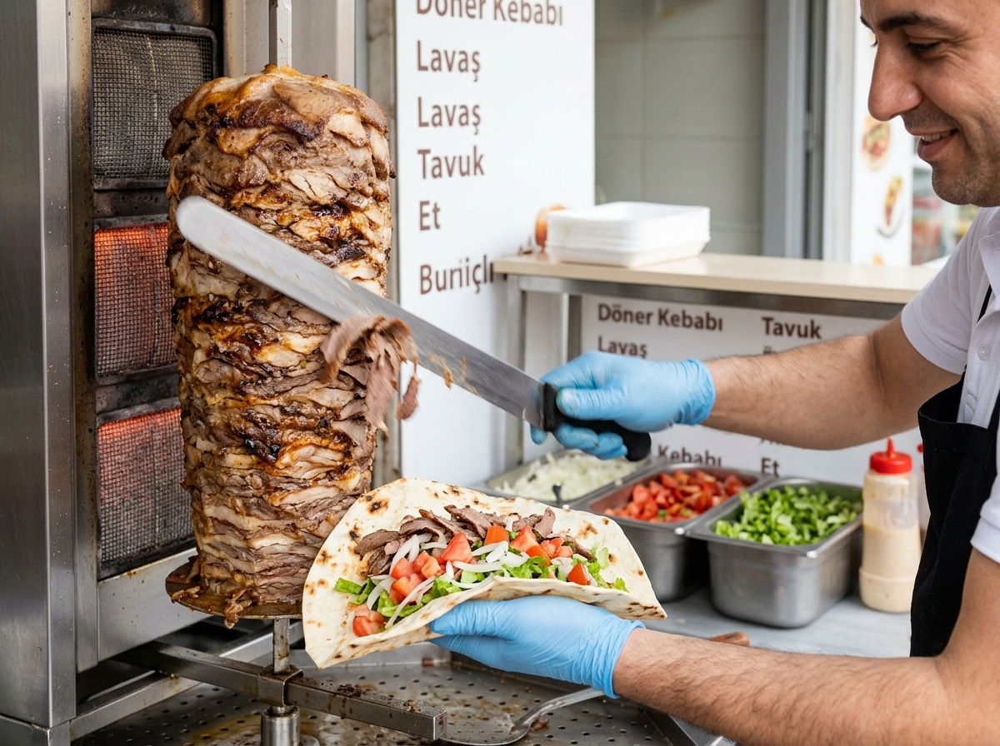
KöfteKöfte sind kleine Bällchen oder Röllchen aus Hackfleisch. Sie werden gut gewürzt und dann gebraten oder gegrillt. Man isst sie mit Reis, Salat oder Brot. Köfte sind in der Türkei sehr beliebt.
Grüne Wörter für die AppHackfleischBällchengewürztgegrilltmit Reis
BaklavaBaklava ist ein sehr süßes Gebäck. Es besteht aus vielen hauchdünnen Teigschichten mit gehackten Nüssen. Darüber kommt viel Honig oder süßer Sirup. Baklava gibt es oft an Festtagen.
Grüne Wörter für die Appsüßes Gebäckdünne TeigschichtenNüsseHonigzu Festen
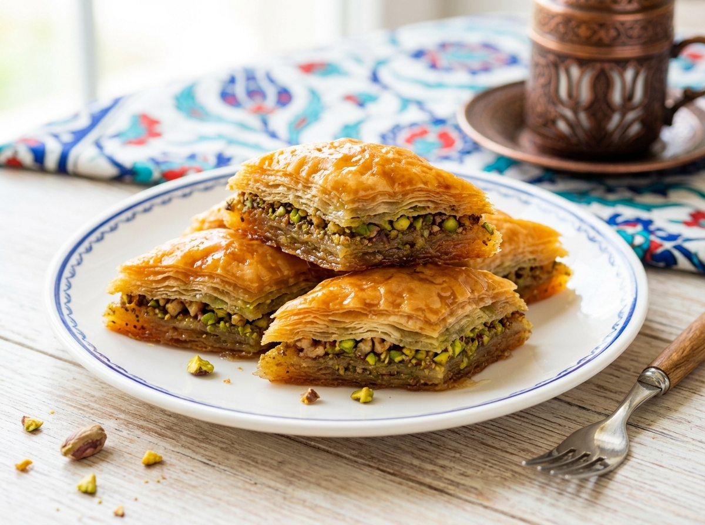
⚽ Gut zu wissen
Die Fußball-Nationalmannschaft der Türkei heißt Ay-Yıldızlılar, das bedeutet die mit dem Halbmond und Stern. Das Team spielt im rot-weißen Trikot, genau wie die Flagge. Bei der WM 2026 ist die Türkei wieder dabei, zum ersten Mal seit langer Zeit. Ihr bisher größter Erfolg war der dritte Platz bei der WM 2002.
Grüne Wörter für die AppHalbmond und Sternrot-weißes TrikotWM 2026dritter Platz 2002stark
🌟 Profi-Wissen
Arda Güler ist Türkeis größter Fußballstar der jungen Generation. Obwohl er noch sehr jung ist, spielt er schon bei Real Madrid. In der Türkei nennen ihn alle das türkische Wunderkind. Bei der Europameisterschaft 2024 spielte er sehr stark.
Grüne Wörter für die AppArda GülerReal Madridtürkisches WunderkindEM 2024junge Generation
Schule in der TürkeiIn der Türkei tragen viele Kinder in der Schule eine Schuluniform. Am Morgen stellen sich die Kinder oft auf dem Schulhof auf. Dann sprechen sie zusammen einen feierlichen Schwur für ihr Land. Erst danach beginnt der Unterricht.
Grüne Wörter für die AppSchuluniformSchulhofam MorgenSchwurdann Unterricht
Tee und BasarIn der Türkei trinken die Menschen sehr viel Tee. Der Tee heißt Çay und kommt in kleine Gläser. Wenn Besuch kommt, gibt es fast immer ein Glas Tee. Viele Familien kaufen frisches Obst und Gemüse auf dem Basar ein, das ist ein großer Markt.
Grüne Wörter für die AppTeeÇaykleine GläserBesuchBasar
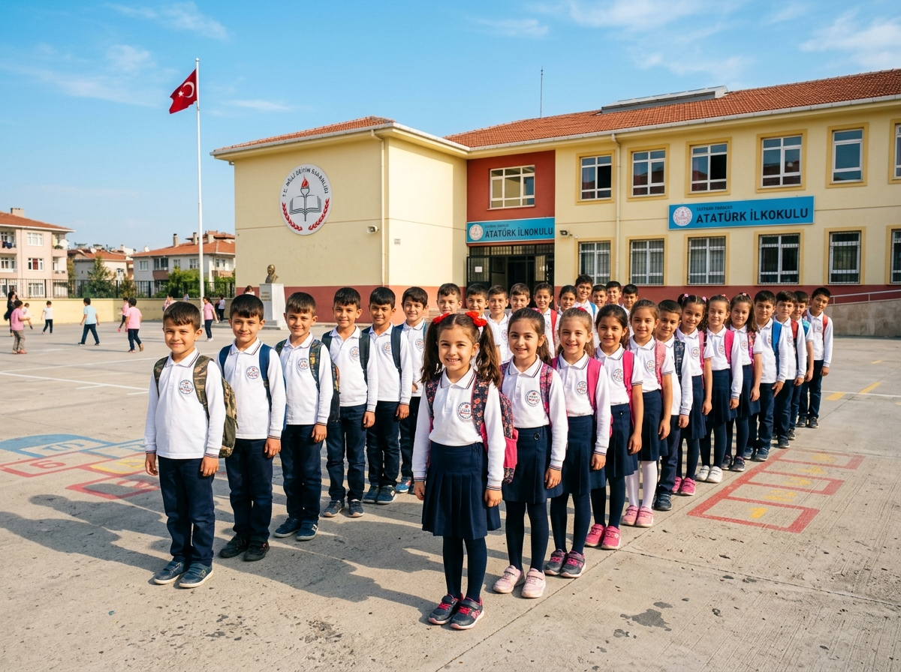